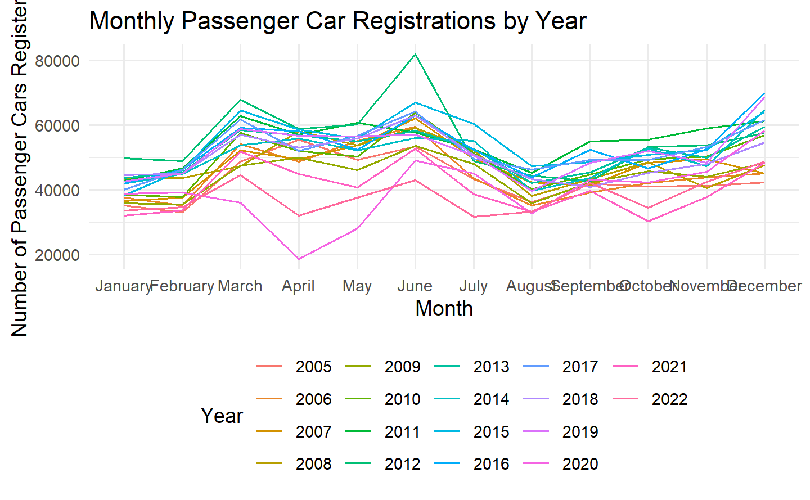

Energizing Change: Electric Vehicle Rise in Switzerland
Author
Pierre Gasly, Alexis Jeannaret, Hugo, Urs Hurni
Published
November 6, 2023
1 Introduction
TO DO’s
Overview and Motivation - ✓
Related Work - TBD
Research questions - ✓
1.1 Background and Motivation
With climatic challenges emerging as pivotal concerns of our times, understanding the dynamics driving environmentally conscious consumer behaviors is paramount. Our team’s keen interest in environmental sustainability and the transition to electric vehicles in Switzerland spurs this research. This dedication to deciphering the nuances of eco-friendly consumption patterns is the driving force behind our topic selection
1.2 Related Work
TBD
1.3 Reseach Questions
How does the rise in environmental consciousness, as depicted by Google Trends, correlate with electric vehicle adoption in Switzerland across different regions and over time, especially in relation to oil price fluctuations and demographic changes?
Given fluctuations in oil prices, demographic shifts, and major policy or automotive industry trends, which of these factors have a direct causal impact on the shifts in the adoption of electric vehicles in Switzerland?
Based on past electric vehicle adoption trends in Switzerland, can we forecast future adoption rates and pinpoint times of significant increases or decreases correlated with major events or policy changes?
In comparing regions in Switzerland, which areas show higher or lower adoption of electric vehicles, and how does this regional adoption align or vary with external factors like oil price changes, environmental consciousness, and demographic shifts?
To what extent have policy alterations, global environmental incidents, and shifts in the automotive industry affected electric vehicle adoption in Switzerland?
2 Data
TO DO’s
Wrangling/cleaning
Sources - TBS
Description - In progress
Wrangling/cleaning - In progress
Spotting mistakes and missing data (could be part of EDA too) - TBD
Listing anomalies and outliers (could be part of EDA too) - TBD
2.1 Raw Datasets
The datasets encompass:
Vehicle Registrations: Detailed regional breakdowns showing vehicle type, fuel type, and numbers across years.
Google Trends: Time-series data showcasing the interest in electric vehicles and environmental topics over time.
Oil Prices: Time-series data indicating Brent oil price fluctuations over the years.
Demographics: Indicators like population growth, immigration, emigration, gender statistics, and more, which can influence vehicle adoption patterns.
2.1.1 Swiss Vehicle Registration Dataset
Description New registrations of road vehicles by vehicle group and type Results by canton, vehicle group, vehicle type, fuel, month and year
# Reading the datavehicle_data_2005_2008 <-read.csv("../data/road_vehicle_CH_2005-2008.csv")vehicle_data_2009_2022 <-read.csv("../data/road_vehicle_CH_2009-2022.csv")google_trends_data <-read.csv("../data/google_trend_EV_2004-2023.csv")oil_prices_data <-read.csv("../data/BrentOilPrices.csv")demographic_data <-read.csv("../data/demographic.csv")
2.2.1 Data Wrangling : Oil clean
Code
# Change date column into Day# Two types of format: one format before 22.04.2020,a different format after# 22.04.2020 is on row 8361# Format 1: 15-Apr-2020oil_df_1 <- oil_prices_data[0:8360,] |>separate(Date, into =c("Day", "Month", "Year"), sep ="-")# Format 2 : Apr 22, 2020oil_df_2 <- oil_prices_data[8361:nrow(oil_prices_data),] |>separate(Date, into =c("Month", "Day", "Year"), sep =" |, ")# Check for NAsprint(which(rowSums(is.na(oil_df_1)) >0))#> named integer(0)print(which(rowSums(is.na(oil_df_2)) >0))#> named integer(0)# We don't need dates before 2005oil_df_1 <- oil_df_1[4486:nrow(oil_df_1),]# Years in same format for bothoil_df_1$Year <-paste0("20", oil_df_1$Year)# Change the order of both dataframesoil_df_1 <- oil_df_1 %>%select("Year", "Month", "Day", "Price")oil_df_2 <- oil_df_2 %>%select("Year", "Month", "Day", "Price")# Merging both dataframes togetheroil_df <-rbind(oil_df_1, oil_df_2)# We want all our data to have the same date format #YYYY-MM-DD# First we create a df to change the current month format to numbersmonths_numbers <-data.frame(current_month_format =c("Jan", "Feb", "Mar", "Apr", "May", "Jun", "Jul", "Aug", "Sep", "Oct", "Nov", "Dec"),numbers =1:12)# Then we update our oil_dataoil_df <- oil_df %>%left_join(months_numbers, by =c("Month"="current_month_format")) %>%select(Year, numbers, Day, Price) %>%rename(Months = numbers)# Regroup the date in 1 columnoil_df <- oil_df %>%mutate(Date =as.Date(paste(Year, Months, Day, sep ="-"))) %>%select(Date, Price)# Displayed clean datahead(oil_df)#> Date Price#> 1 2005-01-05 41.0#> 2 2005-01-06 43.2#> 3 2005-01-07 43.3#> 4 2005-01-10 44.7#> 5 2005-01-11 43.5#> 6 2005-01-12 43.8
2.2.2 Data Wrangling : Google trend clean
Code
# For this one, we only need to remove the dates from the indexgoogle_trends_data <- google_trends_data %>%rownames_to_column(var ="Date")head(google_trends_data)#> Date Catégorie...Toutes.catégories#> 1 Mois Voiture électrique: (Suisse)#> 2 2004-01 3#> 3 2004-02 0#> 4 2004-03 12#> 5 2004-04 0#> 6 2004-05 6
2.2.3 Data Wrangling : Swiss vehicle clean
Cleaning of road_vehicle_CH_2009-2022.csv
Redundancy
The dataset, representing new vehicle registrations in Switzerland from 2005 onwards, exhibited redundancy in its structure. For example, the data contained both main categories (like ‘> Passenger cars’) and their respective sub-categories (‘… Passenger car’ and ‘.. Heavy passenger car’). On examination, it was observed that the counts under the main categories were simply aggregates of the counts of their sub-categories. Such redundancy could lead to double counting in analytical processes.
Code
##### 1st data 2005 to 2008 clean ###### remove the main categories to avoid and to work with a more granular dataset.# Filter out main categories (rows starting with '>')v_2005_2008 <- vehicle_data_2005_2008 |>filter(!grepl("^>", trimws(Vehicle.group...type)))#rename the Vehicle.group...type column to VehicleType and clean the observations' namesv_2005_2008 <- v_2005_2008 |>rename(Location = Canton,VehicleType = Vehicle.group...type) |>mutate(VehicleType =str_remove(VehicleType, "^\\.\\.\\.\\s*"))# Year Extraction, Reshape the dataset from wide to long formatv_2005_2008 <- v_2005_2008 |>pivot_longer(cols =`X2005`:`X2008`, names_to ="Year", values_to ="Count")# Remove the "X" prefix from the Year columnv_2005_2008$Year <-gsub("X", "", v_2005_2008$Year)##### 2nd data 2009 to 2022 clean ###### Filter out main categories (rows starting with '>')v_2009_2022 <- vehicle_data_2009_2022 |>filter(!grepl("^>", trimws(Vehicle.group...type)))#rename the Vehicle.group...type column to VehicleType and clean the observations' namesv_2009_2022 <- v_2009_2022 |>rename(Location = Canton,VehicleType = Vehicle.group...type) |>mutate(VehicleType =str_remove(VehicleType, "^\\.\\.\\.\\s*"))# Year Extraction, Reshape the dataset from wide to long formatv_2009_2022 <- v_2009_2022 |>pivot_longer(cols =`X2009`:`X2022`, names_to ="Year", values_to ="Count")# Remove the "X" prefix from the Year columnv_2009_2022$Year <-gsub("X", "", v_2009_2022$Year)
Merging and Joining
As the vehicle data was split across multiple files, it was necessary to combine them for a holistic view.
Some of the canton names have special characters that haven’t been encoded properly in the dataset, causing them to display as hexadecimal escape sequences.
We consolidated the ‘Year’ and ‘Month’ columns into a singular ‘Date’ column, converting them into a standard date format. This transformation streamlines time series analyses and provides a more intuitive representation of the data’s temporal dimension. ::: {.cell layout-align=“center”}
Code
#### canton ####df_v$Location <-iconv(df_v$Location, from ="latin1", to ="UTF-8")# keep only the first name when multiple names are provided for cantons (separated by slashes)df_v$Location <-sapply(str_split(df_v$Location, " / "), `[`, 1)#### Year #####create date col# Convert month names to month numbersdf_v$MonthNum <-match(df_v$Month, month.name)# Combine Year, MonthNum, and "01" to create a date in the format "YYYY-MM-01"df_v$Date <-as.Date(paste(df_v$Year, df_v$MonthNum, "01", sep ="-"), format ="%Y-%m-%d")# Drop the Month, Year, and MonthNum columnsdf_v <- df_v %>%select(-Month, -Year, -MonthNum)#### renaming #####renaming the 4 different hybrid name to only twodf_v <- df_v |>mutate(Fuel =case_when( Fuel %in%c("Petrol-electricity: conventional hybrid", "Diesel-electricity: conventional hybrid") ~"Conventional hybrid", Fuel %in%c("Petrol-electricity: plug-in hybrid", "Diesel-electricity: plug-in hybrid") ~"Plug-in hybrid",TRUE~ Fuel # Keeps all other fuel types as they are ))#renaming fuel type: gasdf_v <- df_v |>mutate(Fuel =if_else(Fuel =="Gas (monovalent and bivalent)", "Gas", Fuel))
:::
Conventional hybrids (petrol-electricity or diesel-electricity without plug-in capability) have been around longer and may have a different adoption trend compared to newer technologies.
Plug-in hybrids have larger batteries and can be charged from an electric outlet, allowing for all-electric operation for limited distances, which might influence their adoption differently due to the need for charging infrastructure.
Code
#count nbr of vehicle for a paticular year and vehicle_count_2022 <- df_v |>filter(Location =="Switzerland", year(Date) ==2023, VehicleType =="Passenger car") |>summarize(TotalCount =sum(Count))#print(vehicle_count_2022)
Rows with 0
Retaining rows with a Count of 0 ensures the completeness of our dataset, indicating periods when specific vehicle types or fuel categories had no registrations. This not only provides a holistic view of vehicle adoption trends over time but also aids in generating continuous time series visualizations without gaps, offering a true representation of the data.
Handling Missing Values: Some datasets contained missing values which were either filled using appropriate imputation methods or dropped based on their significance.
Data Type Conversions: Ensuring that all data columns were of the correct type (e.g., converting date strings to date objects).
3 Exploratory data analysis
TO DO’s
Mapping out the underlying structure
Identifying the most important variables
Univariate visualizations
Multivariate visualizations
Summary tables
3.1 Discovery of data from 2005 to 2022
Code
# Filter for only Passenger car vehicle typepassenger_cars <- df_v |>filter(VehicleType =="Passenger car") |>group_by(Date) %>%summarise(Count =sum(Count, na.rm =TRUE), .groups ='drop')# Plotting the data with ggplot2, using Date directly for Passenger carsggplot(passenger_cars, aes(x = Date, y = Count)) +geom_line() +# Use geom_bar(stat = "identity") if you prefer bar plotslabs(title ="Passenger Car Adoption Over Time",x ="Date",y ="Number of Passenger Cars Registered") +theme_minimal() +scale_x_date(date_breaks ="1 year", date_labels ="%Y") # Set date breaks and labels
seasonality
Code
# Filter for only Passenger car vehicle typepassenger_cars <- df_v %>%filter(VehicleType =="Passenger car") |>mutate(Year =year(Date), Month =month(Date)) |>group_by(Year, Month) %>%summarise(Count =sum(Count, na.rm =TRUE), .groups ='drop') |>mutate(Month =factor(Month, levels =1:12, labels = month.name)) # Convert Month to a factor to ensure proper ordering in the plot# Plotting the data with ggplot2, showing the trend within each yearggplot(passenger_cars, aes(x = Month, y = Count, group = Year, color =as.factor(Year))) +geom_line() +labs(title ="Monthly Passenger Car Registrations by Year",x ="Month",y ="Number of Passenger Cars Registered",color ="Year") +theme_minimal() +theme(legend.position ="bottom") +scale_x_discrete(limits = month.name) # Ensure months are shown in order

This pattern suggests a seasonal trend with a mid-year peak and a year-end increase.
Code
# Filter for only Passenger car vehicle typepassenger_cars <- df_v |>filter(VehicleType =="Passenger car") |>mutate(YearMonth =floor_date(Date, "month")) |>group_by(YearMonth) %>%summarise(Count =sum(Count, na.rm =TRUE), .groups ='drop') |>ungroup() %>%mutate(Year =year(YearMonth), Month =month(YearMonth, label =TRUE, abbr =TRUE)) |>arrange(Year, Month)# Plotting the data with ggplot2 without month names on the x-axisggplot(passenger_cars, aes(x =as.numeric(format(YearMonth, "%m")), y = Count, group = Year, color =as.factor(Year))) +geom_line() +facet_wrap(~ Year, scales ="free_y") +labs(title ="Seasonal Trends in Passenger Car Registrations",x ="Month",y ="Number of Passenger Cars Registered") +theme_minimal() +theme(axis.text.x =element_blank(), # This will remove the month labelsaxis.ticks.x =element_blank(), # This will remove the ticks on the x-axislegend.position ="none") # Remove the legend to clean up the plot